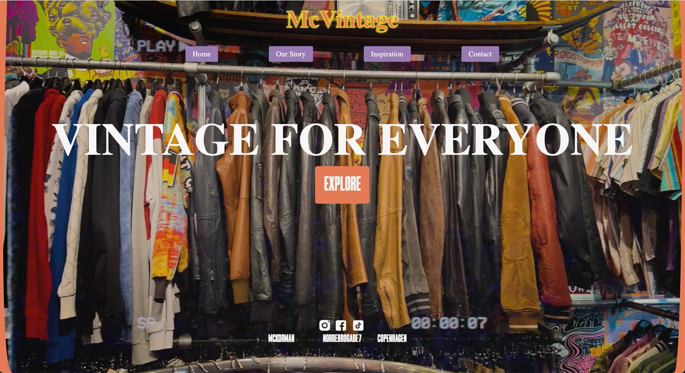

GRUNDLÆGGENDE INDHOLD
PROCES, LÆRING & LØSNING
LÆRING ~ Gruppearbejdet på dette tema, Grundlæggende Indhold, har lært grundlæggende forståelse af indholdsproduktion samt processen herom, hvilken også betyder, at jeg har arbejdet med teamkontrakter, daily scrums, Trello-boards og GitHub for planlægning, samarbejde og projektstyring. Jeg har lavet en del gruppeprojekter tidligere, men jeg har alligevel lært meget af gruppearbejdet under dette tema.
PROCES ~ Opgaven for Tema 05 var, at vi i grupper skulle redesigne et virksomhedssite med vores viden fra semestrets foregående temaer. Min gruppe og jeg valgte vintagebutikken McVintage på Nørrebro. Designprocessen foregik i løbende fælles sparing og idégenereing samt via tests. Vi delte kodningen af de forskellige HTML-sider ud mellem os, og stod dermed for én side hver. Grundet fravær i gruppen, endte jeg med både at stå for forside og én underside. Selvom selve kodningen foregik individuelt, sparede vi løbende med hinanden, og arbejdede i samme GitHub, så vi hele tiden kunne følge med i hinandens proces samt kunne arbejde ud fra samme CSS styling.
LØSNING ~ Mit og min gruppes færdige site kan tilgåes her.
